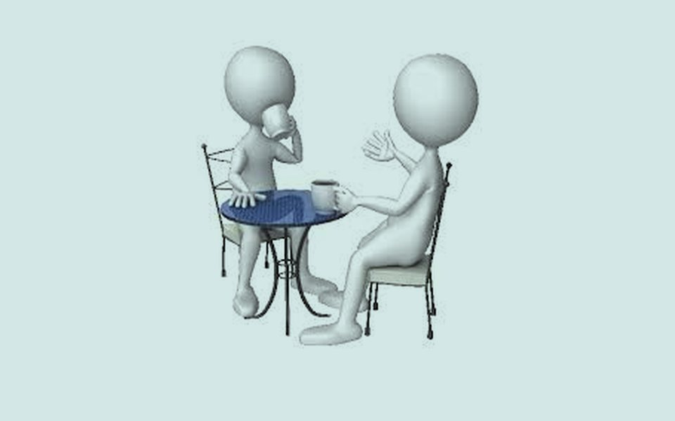

Si crees que bebes demasiado
- Habla con alguien de confianza: un familiar, un amigo, un maestro o un orientador.
- Pide una cita con tu médico o con un servicio de salud mental.
- Evita decidir solo si dejarlo de golpe: en consumos fuertes, suspender de repente puede ser peligroso y conviene hacerlo con apoyo médico.
Si te preocupa un hijo, hermano o amigo
- Habla en un momento tranquilo, no cuando la persona esté bajo los efectos del alcohol.
- Describe lo que has visto sin etiquetar ni regañar: “Me preocupa que…”.
- Escucha primero. Ofrece acompañarle a pedir ayuda profesional.
- Si hay intoxicación grave (no responde, vómito persistente, respiración lenta), llama a emergencias.
En México
Línea de la Vida, atención gratuita y confidencial sobre salud mental y adicciones, las 24 horas:
También puedes acudir a un Centro de Atención Primaria en Adicciones (CAPA) o a los grupos de Alcohólicos Anónimos de tu localidad. En una emergencia, marca el 911.